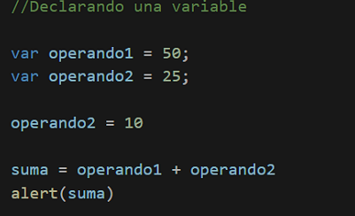
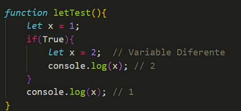

variables en JavaScript
Las variables en los lenguajes de programación siguen una lógica similar a las variables utilizadas en otros campos como las matemáticas. Una variable es un elemento utilizado para almacenar y hacer referencia a otro valor. El uso de variables le permite crear "programas universales" que siempre se comportan igual sin importar qué valores específicos se utilicen.
Declaración y uso de Variables
A la hora de declarar variables, existen varias formas de declararlas dependiendo de cómo se utilicen, por ejemplo:
1. Con la palabra clave var. Esta sintaxis se puede utilizar para declarar variables locales y globales, dependiendo del contexto de ejecución.
caracteristicas
Se utilizaba antes de ES6 para declarar variables.
Tiene un alcance funcional o global .
ejemplo:

2. Con la palabra clave let.Esta sintaxis se puede utilizar para declarar una variable local con ámbito de bloque.
Introducida en ES6, es la opción preferida para declarar variables que pueden cambiar de valor.
Tiene un alcance de bloque.
ejemplo:
